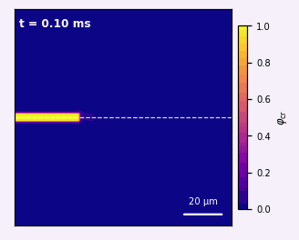
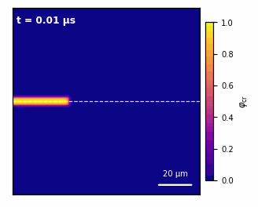
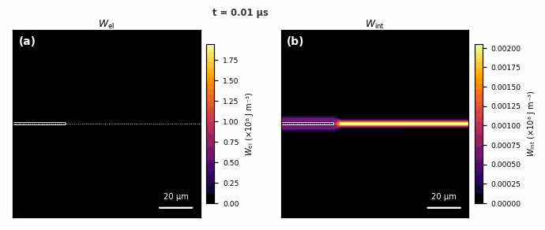

Harry Smith · Dr. Aleksey Yerokhin · Dr. Tom Flint
Henry Royce Institute | Department of Materials, University of Manchester
PGR Conference · April 2026 · Supplementary material
Full symbol table: fields, crystal plasticity, phase-field fracture
Complete parameter tables for the decoupled (Case A) and coupled (Case B) runs
Overview of the research project and objectives
φcr advancing along the grain boundary over the full Stage 2 duration (~15 ms). Crack nucleates at the seed notch and propagates ~95 μm along the GB.

φcr field from the fully coupled run up to the crash at t ≈ 1.75 μs, showing crack nucleation and early GB propagation before solver failure.

Wel and Wint evolving side by side. Wel peaks anomalously inside void cells (no plasticity → full elastic strain); Wint correctly localises at the GB and crack front.
